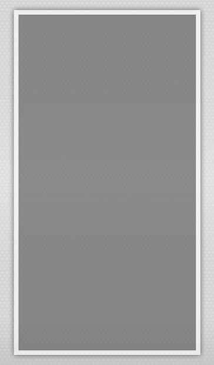

<!--
  This template gets placed in the Pet tab's directive.
  It was wired up in the app config (app.js)
  The 'pets' data comes from its $scope within PetIndexCtrl (controller.js)
-->

<!-- title="{{myTitle}}" -->
<!-- <ion-view  title='Event Info'> -->
<ion-view>

  <ion-content scroll="false" has-header="false" has-tabs="false">

<!-- <div id='shadow'> -->
  <div id='wholeEventsPage'>

  		<div id="unMenu">
      <button class="button button-clear button-icon icon ion-loading-d" ng-click="open_menu()"></button>
     </div>
     	<div id="unLogo">
  		</div>
	 <!--  <div id='eventBack'> -->
	<!--     -->

	    <ion-list id='eventList'>

	    	<scroll style="height:500px">


	 				<div ng-repeat="event in events" id='eventWrapper'>

						 	<!-- <div ng-click="go('#/tab/event/{{event.id}}'')"> -->
						    
				 				<h3>{{event.name}}</h3>
				        <p href="#/tab/event/{{event.id}}">{{event.location}}</p>
				        <p href="#/tab/event/{{event.id}}">{{event.start_time}}</p>
				        <button class="button button-clear button-icon icon ion-android-note" href="#/tab/event/{{event.id}}"></button>
				        <br href="#/tab/event/{{event.id}}">
				        <hr size=1 width="93%">
			<!-- 	      </div> -->

	      	</div>
	      </scroll>
	    </ion-list>
	  </div>
	 <!-- </div> -->
  </ion-content>
</ion-view>


